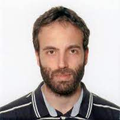

Aims
Join us this summer to ANEIS - Applied Neurosciences EBRAINS- Italy School:
For the second year, we are organising the ANEIS summer school in Ventotene island, linking Neurotechnology to Clinics, for an intensive exploration of the cutting-edge topics in neuroscience. Our program offers an immersive experience to the participants at the forefront of Neuroscience research and its applications, covering a broad range of themes, including theoretical, computational, and systems neuroscience, data analysis, neuroinformatics, and clinical applications. In the surroundings of the peaceful and picturesque Ventotene island, you will engage with world-class leading researchers, participate in hands-on sessions, and expand your network with colleagues and experts in the field. Whether you are a student, a researcher, or a practitioner, ANEIS will provide you with valuable knowledge and skills to advance your expertise in neuroscience.
Topics
- Theoretical Neuroscience: modeling biophysics and electrophysiology, from
single neurons to brain networks.
- Computational Neuroscience: design, implementation, and numerical
simulations of both theory- and data-inspired models.
- Systems Neuroscience: analysis of biological data from humans and animal
models, with a special focus on data pre-processing and production for
paradigmatic experiments.
- Data Analysis: introduction to dynamical systems approaches, machine learning
techniques, graph theory and advanced statistical methods for neural time series.
- Clinical Applications: case studies on neural modulation, exploring physical
interventions and the impact of chemical perturbations.
We look forward to welcoming you!
Programme
Saturday 13/09/25
- Morning: Arrival of the delegates and welcome
- Afternoon: Lectures
- 17.00: Andrea D'Avella (on System Neuroscience)
- 18.00: Antonino Cattaneo (on Cellular Experiments)
- 19.00: Wine and Cheese
Sunday 14/09/25
- Morning: Hands-on Projects (9:30 - 13:00)
- 11.00: Light coffee break
- 13.00: Light Lunch
- Afternoon: Lectures
- 16.00: Hans Sherberger (on System Neuroscience)
- 17.00: Coffee break
- 18.00: Mavi Sanchez-Vives (on System Neuroscience)
- 19.00: Peggy Series (on Computational Psychiatry)
Monday 15/09/25
- Morning: Hands-on Projects (9:30 - 13:00)
- 11.00: Light coffee break
- 13.00: Light Lunch
- Afternoon: Lectures
- 15.00: Sergio Martinoia (on Cellular Experiments)
- 16.00: Giancarlo La Camera (on Theoretical and Computational Neuroscience)
- 17.00: Coffee break
- 18.00: Alberto Priori (on Clinical Applications)
- 19.00: Alessandro Treves (on Theoretical and Computational Neuroscience)
Tuesday 16/09/25
- Morning: Social Programme (9:30 - 13:00)
- Afternoon: Lectures
- 15.00: Eleni Vasilaki (on Neuro and AI)
- 16.00: Shimon Marom (on Molecular and System experiments)
- 17.00: Coffee break
- 18.00: Lino Nobili (on Clinical Applications)
- 19.00: Stefano Fusi (on Theoretical and Computational Neuroscience)
Wednesday 17/09/25
- Morning: Hands-on Projects (9:30 - 13:00)
- 11.00: Light coffee break
- 13.00: Light Lunch
- Afternoon: Lectures
- 15.00: Gustavo Deco (on Theoretical and Computational Neuroscience)
- 16.00: Luca De Palma (on Clinical Applications)
- 17.00: Coffee break
- 18.00: Eleonora Russo (on Theoretical and Computational Neuroscience)
- 19.00: Silvestro Micera (on Clinical Applications)
Thursday 18/09/25
- Morning: Hands-on Projects (9:30 - 13:00)
- 11.00: Light coffee break
- 13.00: Light Lunch
- Afternoon: Lectures
- 16.00: Bruno Averbeck (on System Neuroscience)
- 17.00: Gianluigi Mongillo (on Theoretical and Computational Neuroscience)
- 18.00: Coffee break
- 19.00: Ruben Moreno-Bote (on Theoretical and Computational Neuroscience)
- 21.00: Social Dinner
Friday 19/09/25
- Morning (9:30 - 11:00)
- Presentation of projects!
- Concluding remarks
- Departures
Speakers
-
Bruno Averbeck (NIMH/NIH)
-
Antonino Cattaneo (Scuola Normale Superiore, Pisa)
-
Andrea D'Avella (UNIME)
-
Gustavo Deco (Pompeu Fabra University)
- 
Luca De Palma (Children's Hospital Bambino Gesù)
 Stefano Fusi (Columbia Univ.)
Stefano Fusi (Columbia Univ.) Giancarlo La Camera (Stony Brook Univ.)
Giancarlo La Camera (Stony Brook Univ.)-
Shimon Marom (Technion)
-
Sergio Martinoia (Univ. of Genova)
-
Gianluigi Mongillo (CNRS)
-
Ruben Moreno-Bote (Pompeu Fabra University)
-
Silvestro Micera (EPFL and Scuola Superiore Sant'Anna)
-
Lino Nobili (Univ. of Genova)
-
Alberto Priori (Univ. of Milan)
-
Eleonora Russo (Scuola Superiore Sant'Anna)
-
Peggy Series (Edinburgh Univ.)
-
Mavi Sanchez-Vives (IDIBAPS)
-
Hans Sherberger (Göttingen Univ.)
-
Alessandro Treves (SISSA)
-
Eleni Vasilaki (Sheffield Univ.)
Organizers
-
Stefano Ferraina (UNIROMA1)
 Michele Giugliano (UNIMORE)
Michele Giugliano (UNIMORE)-
Maurizio Mattia (ISS)
Registration
Deadline for registration: June 15th 2025, 23:59
Register using the Google FORM
You will need:
A recommendation letter, signed by a senior researcher
Your full CV, including a concise summary (max 500 words) on page 1
A motivation letter, where you explain your interest in ANEIS and why you should be selected (max one A4 page, Arial 10 pt, single-line)
Registration fee: 300 €
The registration fee will include:
7 nights accommodation in Ventotene
6 x Lunch (dinner not included)
1 x Social dinner
Touristic programme
Travel expenses are NOT refunded.
Travel
How to Reach Ventotene Island
Ventotene can be reached by ferry boat from Formia-Gaeta. At least two connections per day are available. Check the schedule and pre-order tickets online at www.laziomar.com.
Traveling to Formia-Gaeta
- By TRAIN
- Check the train schedule, connecting e.g. Rome Termini or Naples to Formia-Gaeta, online at www.trenitalia.com
- By PLANE
- Fly to Rome Fiumicino airport or to Naples airport, then take the connection train(s), or taxi, to Formia-Gaeta.
- TAXI
Mr. Bruno Valerio (333-3560985) offers a taxi service to Formia-Gaeta, from/to Rome and Naples airports.
- CONNECTING TRAINS
- From Rome Fiumicino airport: check for Leonardo Express train to Roma Termini www.trenitalia.com
- From Rome Ciampino airport: check for the shuttle bus to Roma Termini station www,sitbusshuttle.com
- From Naples airport: check for the shuttle bus Alibus to Neaples' Central Station Piazza Garibaldi.
- By CAR
Point your GPS navigator to the "Molo Azzurra, 04023 Formia LT". We suggest parking your car and take the boat
- Indoor parking:
The service costs €10-12 per day. Contact Mr. Gilberto Bartolomeo: 388-4256478 – 334-9992512.
- Outdoor parking:
The service costs €8 per day. Contact Parcheggio Portuense: 339-8188257.
Hands-on Projects
- Motor planning decoding in NHP
- Inferring RNN models matching data (see here)
- Analysis of extracellular and intracellular electrophysiological recordings
- Reconstruction of network from anatomical imaging